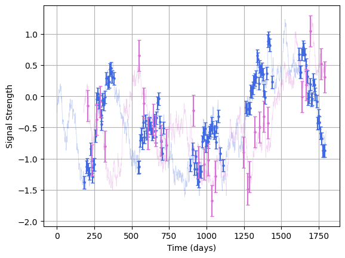
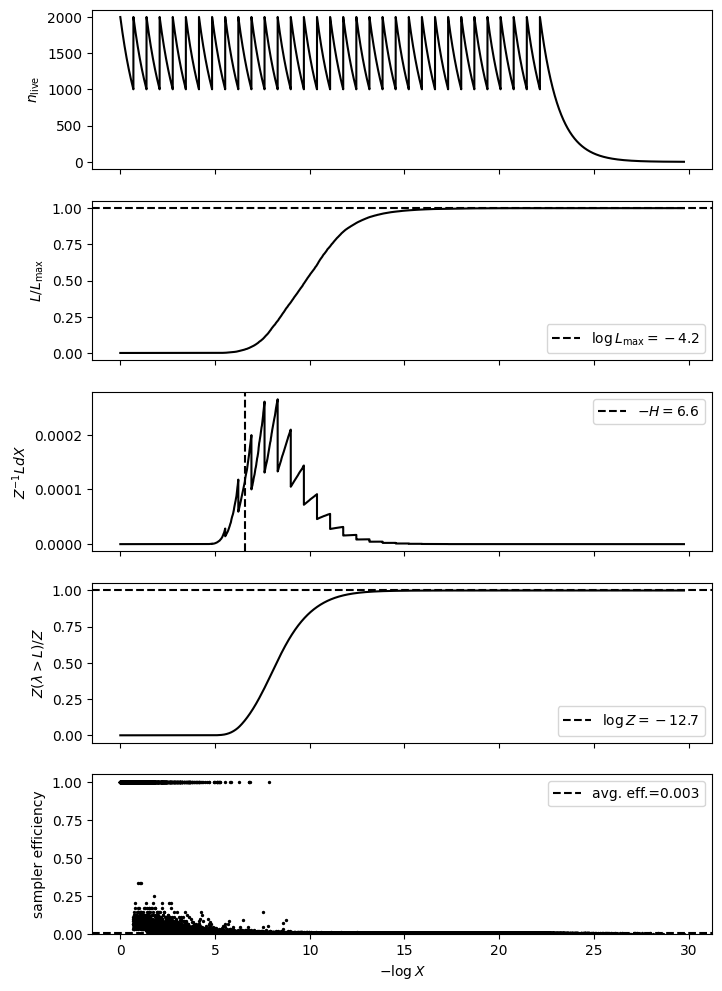
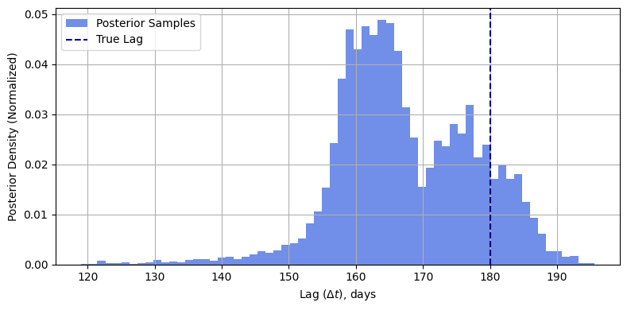

Nested Sampling in LITMUS
In this tutorial, we'll show how to use LITMUS's nested sampling implementation. You might need to use nested sampling if:
1. Your non-lag posteriors are highly non-gaussian (typical for low SNR sources), or
2. You need a really precise calculation of the evidence,
And you should only use it when:
1. Your model doesn't have heaps of parameters
2. You don't particular care about waiting a while for the results.
First, per normal we'll use the mocks module to generate some mock data:
mock = litmus.mocks.mock(lag=180,
E=[0.1, 0.25],
tau=400)
lc_1, lc_2 = mock.lc_1, mock.lc_2
mock.plot()
plt.show()

Now, choose a stats model to fit from the models module. In our case this will be GP_simple, the simplest lag recovery model. Nested sampling as a method doesn't have the nicest scaling with model dimensions, so we'll fix a few of the parameters at their true values to keep the dimensionality low.
model = litmus.models.GP_simple(verbose=False,
debug=False,
prior_ranges=mock.params() | {'lag': [0, 1_000],
'logtau': [np.log(10), np.log(10000)],
'logamp': [np.log(0.1), np.log(10)]
}
)
Now we make a nested sampler from the fitting_methods module. LITMUS's nested sampling makes use of the implementation in JAXNS, and you can defer to the documentation there for specifics about the inner workings. For the nested_sampler fitter, we've got a few dials we can turn to tune the sampler. See the docs for more detail, but in short, we can set the following:
| Argument | Description |
|---|---|
num_live_points |
Number of live points to use in nested sampling fitting. Defaults to 500. |
max_samples |
Maximum samples before terminating the run. Defaults to 10_000. |
num_parallel_samplers |
Number of parallel samplers to fit with. Defaults to 1. |
evidence_uncert |
Termination condition for evidence uncertainty. Default to 1E-3. |
live_evidence_frac |
Termination condition for live fraction of evidence remaining. Defaults to log(1 + 1e-3). |
Once that's set up we can run the fitter. Note that nested sampling is a markedly slower fitting method, and can take a fair while to converge even in small dimensions. It's best to use it as a fallback if you're worried that LITMUS's hessian_scan and svi_scan methods aren't capturing non-gaussianity properly, or if they seem to be having a hard time generating a nice set of test lags.
fitter = litmus.fitting_methods.nested_sampling(model,
num_live_points = 2_000,
max_samples = 50_000,
evidence_uncert = 1E-4
)
fitter.fit(*mock.lcs())
Once we have everything all set up nicely, we can call JAXNS internal diagnostic window to check that everything's run properly. If you don't know how to interpret these, check out this nested sampling tutorial:

<Figure size 640x480 with 0 Axes>
If you need to get a hold of the internals moving parts from JAXNS, you can get:
1. The JAXNS sampler via fitter.sampler
2. The JAXNS result object via fitter._jaxnsresults
3. The JAXNS termination condition via fitter._jaxnstermination
To get results we just call the get_samples() and get_evidence() functions like we normally would.
Z = fitter.get_evidence()
Z, Zem, Zep = Z
print("The model evidence is between log10(Z) = %.2f and %.2f" %(np.log10(Z+Zem), np.log10(Z+Zep)))
The model evidence is between log10(Z) = -5.53 and -5.47
Doing a quick histogram we can see how well the nested sampler has recovered the lag posterior.
samples = fitter.get_samples(10_000)
#----------------------
plt.figure(figsize=(8,4))
plt.hist(samples["lag"], bins = 64, density=True, color = "royalblue", alpha=0.75, label = "Posterior Samples")
plt.grid()
plt.axvline(mock.lag, label = "True Lag", ls='--', color = "navy")
plt.xlabel("Lag ($\Delta t$), days")
plt.ylabel("Posterior Density (Normalized)")
plt.tight_layout()
plt.grid(True)
plt.legend()
plt.show()

And throwing this off to a LITMUS plotter object we can see how well it's constrained the other parameters:

Notice that, even though we're using the same model / data as the lightcurve constraint example, this model has much higher uncertainty in the lag. This is because, in that example, we fixed logamp=0.0. The damped random walk has a strong correlation between logtau and logamp, and for low SNR sources like this that spirals out into a near degeneracy. In cases like this, hessian_scan and SVI_scan will still do okay at recovering the lag, but might give some misleading result for the highly non-gaussian non-lag parameters. This is a textbook case of where nested sampling would be useful.